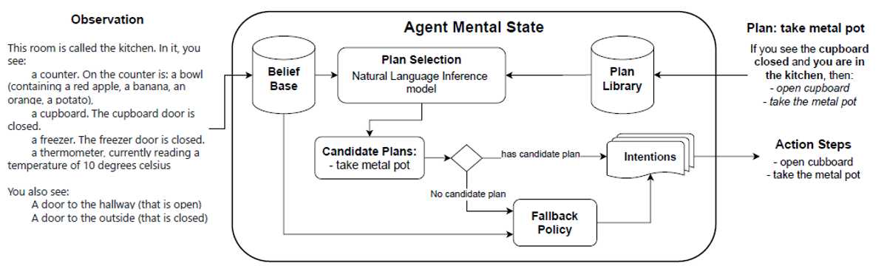
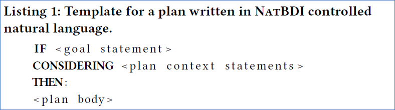

NatBDI -BDI Agents in Natural Language Environments-ゴール：開発者がAIの専門家でなくても、効率的な自律エージェントを開発できる
そのために必要なこと
エージェントが自然言語を適切に理解し人間の指示を解釈する能力
開発者がエージェントの意思決定過程を十分に把握できる能力
本研究では、
Ichida, Alexandre Yukio, Felipe Meneguzzi, and Rafael C. Cardoso. BDI agents in natural language environments. AAMAS 2024, May 6–10, 2024, Auckland, New Zealand.
NatBDIアーキテクチャの概要

NATBDIアーキテクチャの概要。エージェントが自然言語環境でどのように情報を処理し、計画を選択し、意思決定を行うかを図解。
Plan Selectionモジュールについて
NatBDIは、AIの「信念」とプランの「条件」を比べるために「Natural Language Inference (NLI)」を使用
NLIは二つの文章の関係を判断し、「entailment（〇）」「contradiction（×）」「neutral（△）」を区別
NatBDIでは、「entailment」のみを「条件が満たされている」としてプランを選択
複数の文章から成る信念と条件の組み合わせを全て比較し、条件が全て満たされた場合だけプランを使う

Fallback Policy
LLMは自然言語で行動候補を生成するが、強化学習モデルは自然言語を理解できない。そのため、LLMの生成した行動候補を、事前に定義された行動空間にマッピングすることで、強化学習モデルが評価できるようになっている。
1. LLMの出力の構造化
LLMは「ストーブのスイッチを入れる」「金属の容器を選ぶ」といった自然言語の行動記述を生成。
この出力を、強化学習モデルが扱える形式（例えば、離散的なアクションリスト）に変換。
実装では、事前に定義されたアクションセットと照合し、最も意味的に近いものを選択する手法が用いられる。
2. 強化学習モデルの評価プロセス
DRRN（Deep Reinforcement Relevance Network）は行動の成功率や報酬を考慮して行動候補を評価する。
過去の行動履歴から得られた報酬を参照し、現在の環境状態に基づいて最適な行動を選択する。
3. 新規行動の評価
過去に見たことのない行動候補の評価は、近傍探索や埋め込み空間での類似性評価が鍵となる。
例えば、過去に「氷を加熱する」行動を成功させた経験があれば、「バターを溶かす」という新しい行動を、「加熱が必要な行動」として類似性を推定し、評価する。
つまり、LLMの自然言語出力を適切なアクションフォーマットに変換し、強化学習モデルがその行動の成功可能性を評価することで、未知の行動でも適切な選択ができるようになっている。
評価環境
1. ScienceWorldテキスト環境
AIの性能は「ScienceWorldテキスト環境」というインタラクティブなテキスト環境を使用
初等教育レベルの科学カリキュラムをシミュレート
エージェントの場所間の移動やオブジェクト操作に関する推論を評価
物質の状態を考慮して異なるオブジェクトを組み合わせるエージェントの理解度もテスト
2. 既存のLLMの限界
現在のLLMは質問応答タスクで情報検索システムとしては機能するが、科学知識に基づいて行動または計画する推論においては限界があることが示されている
ScienceWorld環境は、人間が簡単に実行できるタスク（例：氷を溶かす）を解決するために、宣言的な科学知識を使用して行動または計画するエージェントの能力を評価する
3. ベンチマークとタスク
環境には30のベンチマークが含まれており、物質の状態変化、測定、分類などの10のトピックに分かれている
評価には「melt」と「find-non-living-thing」の2種類のタスクを使用
「melt」タスクは「find-non-living-thing」よりも複雑な推論を必要とし、既存手法は一般的に性能が低い
実験設定
NatBDIはPythonで実装。
プランライブラリは人間が自然言葉で作成（melt・find-non-living-thingタスク用）。
ナビゲーションプランはAIが自動で効率的なルートを計算してプラン化。
タスクの目標はBDIのメインゴールとして設定。
NLI用AIモデルは「roberta-large」中心に、「BERT」「MiniLM」と比較。
計算には高性能GPU（NVIDIA RTX 3060）を使用。
Fallback PolicyはDRRN強化学習モデルを訓練して利用。
同じFallback行動を50回以上繰り返すと失敗と判定。
実験結果 -NatBDIの優位性
人間が作った自然言語プランを少しでも追加すると、AIのタスク達成スコアが大幅に改善！
特に難しい「melt」タスク で効果が顕著で、プランが少しあるだけで大きく成績が伸びた
行動数も少なくなり効率化
強化学習だけでは苦戦、特にmeltタスクはほとんどクリア不可
多くのプランを使うと成績は向上したが、満点には届かず、想定外の状況ではFallback Policyに頼る
NLIモデルの性能依存、高性能モデル（roberta-large）でより正確にプランの選択が可能に
BDIモデルとLLMの相補的な働き
1. LLMがBDIエージェントをどう高度化したか
自然言語処理の強化： BDIエージェントの計画選択にLLMを導入することで、自然言語ベースの推論が可能になった。自然言語推論（NLI）を用いた計画選択により、エージェントの計画適用範囲が拡大した。
プランライブラリの拡張： BDIモデルではルールベースのプランしか選択できなかったが、LLMによって自然言語のプラン記述が可能となり、計画の表現力が向上。柔軟な計画変更や、人間が直接プランを記述が可能となった。
フォールバックポリシーの導入： 計画が適用できない場合、LLMを活用した強化学習ベースのフォールバックポリシーが動作するため、適切な意思決定が可能になった。
2. BDIがLLMをどう高度化したか
意思決定の透明性向上： LLM単体の推論はブラックボックスになりやすい。BDIモデルの導入により、信念・欲求・意図（BDI）の枠組みで推論過程を説明できるようになった。これにより、エージェントの行動を理解しやすくなった。
計画選択の合理性向上： BDIモデルを利用することで、LLMエージェントは従来の確率的推論だけでなく、構造化された計画選択（明示的なプラン適用ルール）に基づく行動をとれるようになった。
人間とのインタラクションの質向上： BDIの計画構造を活用することで、エージェントが明確な目標と計画を持った状態で会話できるようになり、単なるLLMエージェントよりも対話の一貫性や合理性が向上した。
BDIの導入によってLLMの推論の透明性と計画選択の安定性が向上し、LLMの導入によってBDIの自然言語推論能力と適応性が強化されたという相補関係が見られる。
まとめと将来展望
まとめ
NatBDIはBDIモデルと自然言語処理を組み合わせた新しいAIの考え方。
AIの「心」の状態を人間が理解しやすく、自然言語をより上手く扱える。
人間が自然な言葉でプランを教え、AIの動きを細かく調整可能。
ブラックボックスではなくAIの動きが見える化された。
実験でプラン追加で成績大幅向上、特に難しいタスクで効果的。
将来展望
ScienceWorldの他のタスクや別環境Jerichoでの実験拡大。
より賢いFallback Policyの開発。
AIが自分でプランを自動学習できるようにする。
前へ
次へ
1 / 14